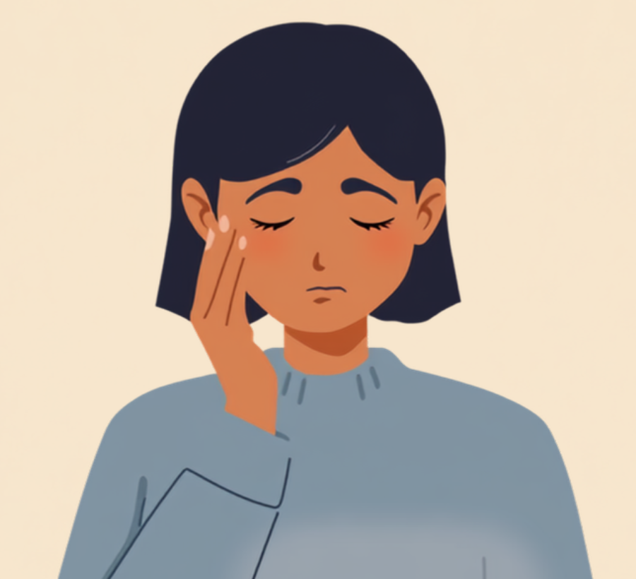
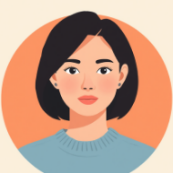
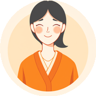

オンライン会議が当たり前になって、画面の隅に映る自分の顔をずっと見てしまう。そんな時間が増えたという声をよく聞きます。醜形恐怖症があると、この「自分の顔が常に視界に入る」という状況が、想像以上に大きな負担になることがあります。この記事では、醜形恐怖症のある方が仕事の中で抱えやすいオンライン会議のつらさと、職場でできる工夫や使える制度を、当事者の声をもとに整理しました（2026年7月時点の情報です）。
PR


なぜオンライン会議がこんなにつらいのか
対面の会議なら、自分の顔をずっと見続けることはありません。でもオンライン会議は違います。画面の隅、あるいは大きく表示された自分の映像が、会議の間ずっと視界に入り続けます。この「自分の顔を見続ける」状態は、海外ではZoom dysmorphia（ズーム・ディスモルフィア）と呼ばれ、外見の欠点を探す意識を強めてしまうことがあると指摘されています。

会議の内容より、画面に映る自分の顔が気になってしまう
普通なら気にならない程度の特徴でも、何度も見ているうちに「やっぱりここが変だ」という感覚が強くなっていくことがあります。実際にある調査では、Web会議でカメラをオフにする理由の第1位が「長時間自分の顔を見たくない」（41.1%）だったという結果も報告されています。醜形恐怖症のある方にとっては、この負担がさらに強く、会議中ずっと気が休まらない状態になりやすいと言われています。
「会議が1時間あったら、その1時間ずっと自分の顔の輪郭とか肌の質感を見てしまっていました。相手が話している内容はほとんど頭に入ってこなくて、終わったあとどっと疲れが出ます。周りは『真剣に聞いてるね』って思ってたみたいですが、実際は自分の顔のことしか考えていませんでした。」
20代・女性（事務職・醜形恐怖症の診断あり）
!
醜形恐怖症の症状の出方や、つらさを感じる場面には個人差があります。この記事の内容がそのまま当てはまるとは限らないため、気になる変化がある場合は自己判断せず主治医に相談することをお勧めします。
相談の一コマ

相談者
会議中、ずっと自分の顔ばかり見ちゃって、話の内容が全然入ってこないんです。終わったあとどっと疲れて…私だけこんな感じなんでしょうか。

ミミ
実はそれ、海外では「Zoom dysmorphia」って名前がつくくらい、よく知られている現象なんですよ。気にしすぎとか、あなただけの問題じゃないんです。
相談者
そうなんですか…名前がついてると聞くだけで、ちょっとホッとします。
ミミ
会議ツールの「セルフビュー非表示」機能、試したことありますか？自分の映像だけ見えなくする設定です。それだけでかなり楽になったという声、よく聞きますよ。
一点の「欠点」に焦点が合ってしまう仕組み
醜形恐怖症の特徴の一つに、顔や体の一部分にだけ意識が極端に集中してしまうことが挙げられます。周りの人が顔全体を自然に見ているのに対して、本人の中では特定の一点だけがまるで虫眼鏡で拡大されたように大きく感じられてしまう。これは意志の弱さや自意識過剰といった話ではなく、注意の向け方の特性として起きている現象だとされています。
本人には拡大されて見えている部分も、周りは気づいていないことが多い
「気にしすぎだよ」と言われても、本人にとっては本当にそう見えているというのがポイントです。見え方そのものが違うので、気合いや考え方だけでどうにかするのは難しいことが多いようです。
ミミ
職場でできる工夫と、カメラオン強要という問題
すべての会議でカメラをオンにする必要はありません。多くのビデオ会議ツールには自分の映像（セルフビュー）だけを非表示にする機能があり、これを使うだけでも負担がかなり軽くなったという声があります。相手には自分の顔が見えていても、自分では見えない状態を作れるからです。
試している人が多い工夫
- 会議ツールの「セルフビュー非表示」機能を使う
- どうしても難しい会議は、音声のみでの参加を相談する
- バーチャル背景や照明を調整し、映る範囲を最小限にする
- 1on1などカメラが必須でない会議から、カメラオフを試してみる
「上司に『みんな顔出ししてるんだから』と言われて、しばらく無理してカメラをオンにしていました。でも会議のたびに動悸がするくらいつらくて、思い切って『体調管理のためカメラオフで参加させてください』と伝えたら、あっさり了承してもらえました。理由を全部話さなくても通ることもあるんだと知って、少し気持ちが軽くなりました。」
30代・男性（営業事務・醜形恐怖症の症状と通院しながら勤務）
i
業務上必要な範囲を超えてカメラオンを強要し、精神的な苦痛を与える行為は「リモートハラスメント」として問題視されることがあります。つらさが大きい場合は、産業医や人事に相談することも一つの方法です。
職場に病名を伝える義務はありません。「カメラオフで参加したい」「セルフビューを消したい」など、業務に関わる範囲だけを伝えるという考え方でも十分だとされています。すべてを説明しなくても、必要な配慮が通ることもあります。
使える制度と、一人で抱えないための相談先
精神障害者保健福祉手帳という選択肢
醜形恐怖症そのものが直接の対象区分になるわけではありませんが、症状に伴ってうつ状態や強い生活のしづらさがある場合は、精神障害者保健福祉手帳の対象になり得るとされています。等級や認定は主治医の診断書がもとになるため、気になる場合はまず主治医に相談してみるのが確実です（2026年7月時点の情報です）。手帳を取得すると、障害者雇用枠での就職や、企業側の合理的配慮を前提にした働き方を選びやすくなる場合があります。
相談できる窓口
- 主治医・かかりつけの心療内科／精神科（認知行動療法などの治療の相談）
- 職場に選任されている産業医（症状の詳細を伏せたまま働き方の相談が可能）
- 精神保健福祉センター、自治体の障害福祉窓口
- 就労移行支援事業所（オンライン業務が多い職種選びの相談も含む）
認知行動療法では、鏡やカメラを見る回数を少しずつ整えたり、「欠点探し」から「全体を見る」練習をしたりすることもあるそうです。一人で抱え込まず、まずは話してみることから始めてみてください。
ミミ
醜形恐怖症の現れ方や、オンライン会議でのつらさの感じ方には個人差があります。この記事の内容がそのまま当てはまるとは限らないため、実際の対応は主治医・専門の相談窓口・支援者とよく相談しながら進めることをお勧めします（2026年7月時点の情報です）。
画面に映る自分の顔が気になってしまうのは、気にしすぎでも甘えでもありません。見え方そのものが人と違うだけで、それに合わせた働き方の工夫はちゃんとあります。
よくある質問
Q. 醜形恐怖症でも障害者手帳の対象になりますか？
醜形恐怖症そのものが直接の区分になるわけではありませんが、症状に伴ってうつ状態や強い生活のしづらさがある場合、精神障害者保健福祉手帳の対象になり得るとされています。判断は主治医の診断書がもとになるため、詳しくは主治医や自治体の障害福祉窓口にご確認ください（2026年7月時点の情報です）。
Q. カメラオンを強要されるのはパワハラになりますか？
一律に「パワハラにあたる」とは言い切れませんが、業務上必要な範囲を超えてカメラオンを強要し、精神的な苦痛を与えている場合は、リモートハラスメントとして問題になり得るとされています。つらさが大きい場合は、産業医や人事に相談することも選択肢です。
Q. 職場に醜形恐怖症だと伝える必要はありますか？
病名を伝える義務はありません。「カメラオフで参加したい」「自分の映像（セルフビュー）を非表示にしたい」など、業務に関わる範囲だけ伝えるという考え方でも問題ないとされています。
Q. オンライン会議のつらさを減らす工夫はありますか？
多くのビデオ会議ツールには自分の映像を非表示にする機能があり、これを使うだけでも負担が軽くなったという声があります。バーチャル背景で周囲を隠す、音声のみで参加できる会議を増やしてもらうなどの工夫も挙げられています。
Q. 一人で抱え込まず相談できる窓口はどこにありますか？
主治医やかかりつけの心療内科・精神科のほか、精神保健福祉センター、就労移行支援事業所などが相談先になります。職場に産業医がいる場合は、症状の詳細を伏せたまま働き方の相談をすることも可能です。